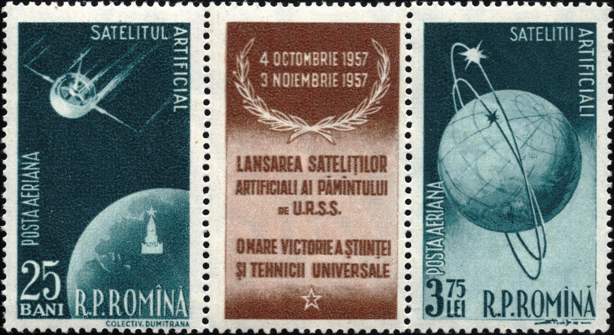
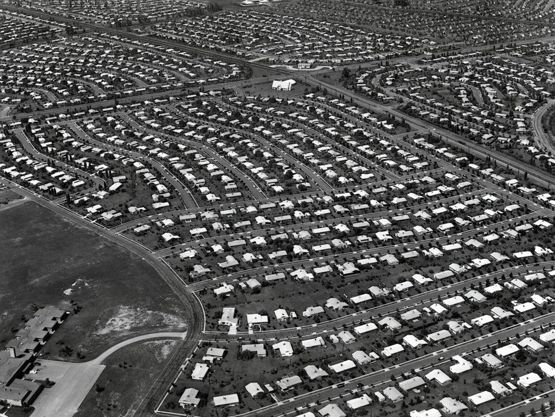
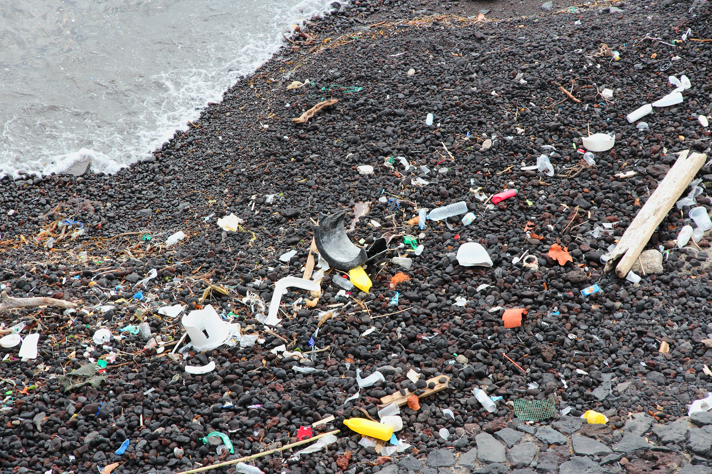

泡泡紙的曲折身世：沒人要的「立體壁紙」與「溫室保溫棉」
共 49 幕分鏡 · 預估成片總長度：12分04秒 (725.0s) · 自動生成於 20261024_story
🎞️ 各場景分鏡與語音審查
001_shot_1 · 大家好~我是白兔!你有沒有過拆開
時長: 12.42s

002_shot_2 · 你可能以為這東西一開始就是為了保
時長: 10.73s

003_shot_3 · 這項今天每年產值幾十億美元的神奇
時長: 9.97s

004_shot_4 · 讓我們把時間倒推回一九五七年的美
🖼️ 畫中畫 PiP
時長: 13.14s
無畫面
疊加參考圖 (PiP)：

005_shot_5 · 但與此同時美國國內的戰後嬰兒潮正
🖼️ 畫中畫 PiP
時長: 13.98s

疊加參考圖 (PiP)：

006_shot_6 · 在新澤西州霍桑市的一間悶熱車庫裡
時長: 13.18s

007_shot_7 · 試圖用改裝過的熱封機將它們壓合在
時長: 10.57s

008_shot_8 · 然而當他們拿著樣品敲開曼哈頓一間
時長: 16.18s

009_shot_9 · 一般人在經歷這種毀滅性打擊後大概
時長: 16.66s

010_shot_10 · 他們心想既然挑剔的人類不想把這玩
時長: 10.08s

011_shot_11 · 一九五九年前後美國戰後現代農業正
時長: 14.78s

012_shot_12 · 兩位發明家一拍大腿認定微小氣泡就
時長: 16.74s

013_shot_13 · 他們開著破舊皮卡穿梭在各個花卉農
時長: 11.17s

014_shot_14 · 然而嚴酷的物理法則是從來不講任何
時長: 15.1s

015_shot_15 · 氣泡在高溫下紛紛爆裂薄膜內側更凝
時長: 16.58s

016_shot_16 · 短短兩年內同一個發明在兩個完全不
時長: 16.34s

017_shot_17 · 時間來到一九六零年菲爾丁和沙瓦納
時長: 16.76s

018_shot_18 · 鮑爾斯敏銳察覺到世界正在經歷一場
時長: 9.97s

019_shot_19 · 一九五九年底藍色巨人發表了劃時代
時長: 10.81s

020_shot_20 · 但這台售價高達幾十萬美元的巨型精
時長: 11.93s

021_shot_21 · 當時全美物流業使用的包裝材料居然
時長: 17.38s

022_shot_22 · 這家跨國巨頭每個月花在維修與退換
時長: 11.37s

023_shot_23 · 他拎著裝滿塑膠氣泡的手提箱直接搭
時長: 16.98s

024_shot_24 · 當主管鐵青著臉把它撿起來拆開檢查
時長: 17.42s

025_shot_25 · 原本客廳和菜園都容不下的垃圾一夜
時長: 10.97s

026_shot_26 · 當競爭對手看到這塊巨大的肥肉時無
時長: 17.06s

027_shot_27 · 最普通的聚乙烯高分子結構其實存在
時長: 16.58s

028_shot_28 · 面對這場殘酷的惡性競爭兩位創始人
時長: 22.59s

029_shot_29 · 希悅爾憑藉這項阻隔氣泡專利技術在
時長: 17.53s

030_shot_30 · 當管理層沉醉在令人眩目的財務報表
時長: 17.18s

031_shot_31 · 你有沒有納悶過為什麼無論男女老少
時長: 16.93s

032_shot_32 · 一九九二年美國西新英格蘭大學的心
時長: 16.73s

033_shot_33 · 實驗結果發現僅僅捏上一分鐘體內的
時長: 11.53s

034_shot_34 · 演化心理學家後來給出了一種深層且
時長: 17.58s

035_shot_35 · 希悅爾無意間創造出了一款最符合人
時長: 17.38s

036_shot_36 · 兩位發明家原本想改變人類客廳結果
時長: 15.98s

037_shot_37 · 但在冷血的資本算盤眼裡傳統泡泡紙
時長: 21.39s

038_shot_38 · 希悅爾的管理層做出了一個震驚全人
時長: 15.58s

039_shot_39 · 更絕的是工程師把原本獨立隔離的氣
時長: 12.32s

040_shot_40 · 然而當這款產品流向市場時全世界的
時長: 16.98s

041_shot_41 · 再也沒有清脆的啪嗒聲再也沒有釋放
時長: 16.18s

042_shot_42 · 主流媒體甚至在頭條文章中嚴厲拷問
時長: 10.78s

043_shot_43 · 面對排山倒海的輿論海嘯這家工業巨
時長: 11.17s

044_shot_44 · 一九九三年發明人菲爾丁與沙瓦納雙
時長: 11.89s

045_shot_45 · 回顧整整半個多世紀的演變你不得不
時長: 19.94s

046_shot_46 · 正是因為一連串徹頭徹尾的慘烈失敗
時長: 12.82s

047_shot_47 · 但故事講到這裡我們也必須無比冷酷
🖼️ 畫中畫 PiP
時長: 17.66s

疊加參考圖 (PiP)：

048_shot_48 · 我們一邊捏碎氣泡獲取短暫的心靈撫
時長: 11.37s

049_shot_49 · 表面上看起來充滿了抵禦外界衝擊的
時長: 18.62s